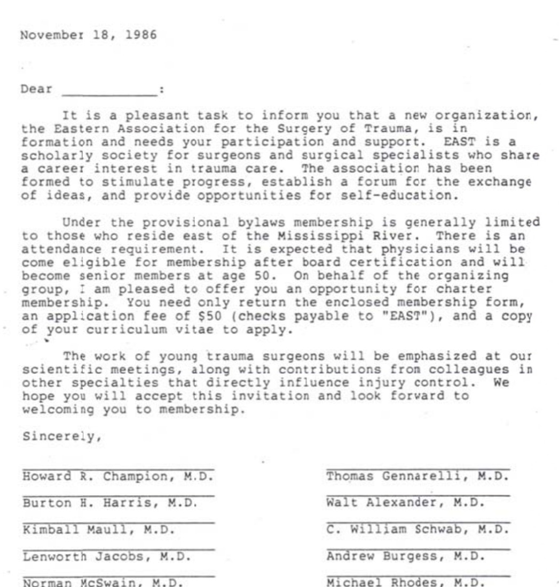

EAST at 40A sketch for Dr. Patel and Dr. Murali, from Eli Harrigan
Founded 1986.40th Annual Scientific Assembly · New Orleans · January 2027
Scroll to begin
Forty years of EAST, told by the people who were there. A book that keeps growing, with the interviews Dr. Murali has already recorded at its center, and a short piece cut from them to open the Presidential Address on January 13.
EAST's kickoff meeting was held on October 19, 1986, at the New Orleans Hilton, where the Articles of Incorporation were approved. Forty years later, the 40th Assembly meets in the same city.
Howard R. Champion, "A Brief History of the Founding of EAST," east.org
The First Annual Scientific Assembly opened on Wednesday, January 13, 1988, at Longboat Key, Florida. The Presidential Address is on Wednesday, January 13, 2027, at 1:30 pm.
Champion; EAST 2027 overall schedule
Every solid point is a fact from EAST's own history. Every dashed point is a place where an interview Dr. Murali has recorded, or one filmed in New Orleans, would sit. Click along the line.
Arrow keys move along the line.
Dr. Patel described a book no one should have to read in one sitting. So each chapter is a page of text and a handful of clips, and the clips do most of the talking. The text here is condensed from Dr. Champion's history. The clips on the right are the shape of what goes there once I've seen the footage.
Chapter one · 1985
Early in 1985, Dr. Howard Champion, then Chief of Trauma and Surgical Critical Care at the Washington Hospital Center, called Dr. Kimball Maull in Knoxville to discuss a surgical organization for young and aspiring trauma surgeons. Dr. Maull emphatically endorsed the concept.
Dr. Champion then called Dr. Lenworth Jacobs at Hartford Hospital. Dr. Jacobs was enthusiastic. Burton Harris, then Chief of Pediatric Trauma at New England Medical Center, was also corralled for the initial planning.
The founders wanted a forum where papers could be presented, young surgeons mentored, careers fostered, and expectations set. Active members would have to be young: under fifty. Above all, the meetings should be fun, but they must also be good science.

Text condensed from Champion's account. His own words would replace mine.
Clips for this chapter
Who made it, who picked up, what was said.
From the recorded interviews, if a founder sat for oneA past president on why the age limit mattered.
From the recorded interviewsOne of the 95 accepted in April 1987 holds the letter.
New: filmed in New OrleansA short piece cut from the interviews that already exist, played inside the Presidential Address, and then the opening of the book itself. It introduces the book as a work in progress, which is what it is. Scrub through a sketch of it.
I go through every interview Dr. Murali has recorded and pull the moments: the lines that could open a chapter, the ones that could open the talk. Within a week we'd know what the footage can carry.
The three-minute piece for January 13, built only from what exists, with a first cut before the holidays. The first chapters of the book take shape around the same clips, so the piece and the book share one look.
The 40th Assembly is the best room EAST will have for ten years. A camera at the leadership dinner and a quiet corner for sit-down interviews would add a year's worth of chapters in three days.
The book keeps going after that, at whatever pace EAST wants.